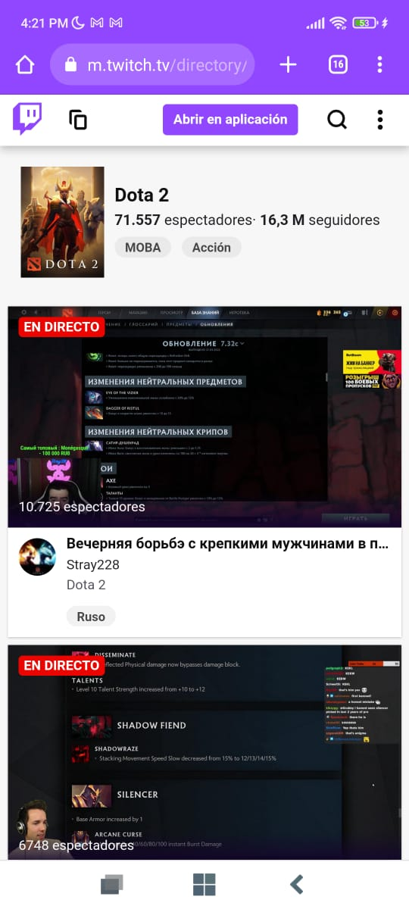

Twitch TV

This website uses black text and icons on a mostly white background, classic max contrast strategy. The large black menu buttons in the corner (with thin lineart for the icons) draw attention to themselves, which is good, since the customer needs to know where they are.